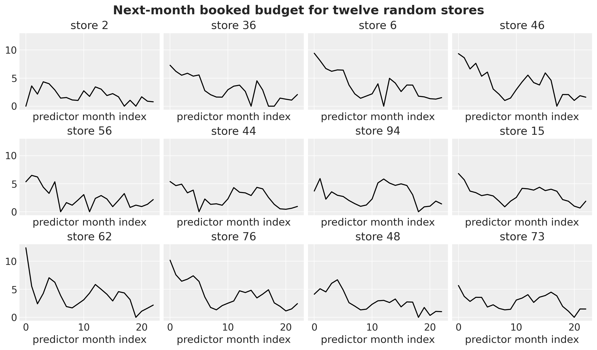
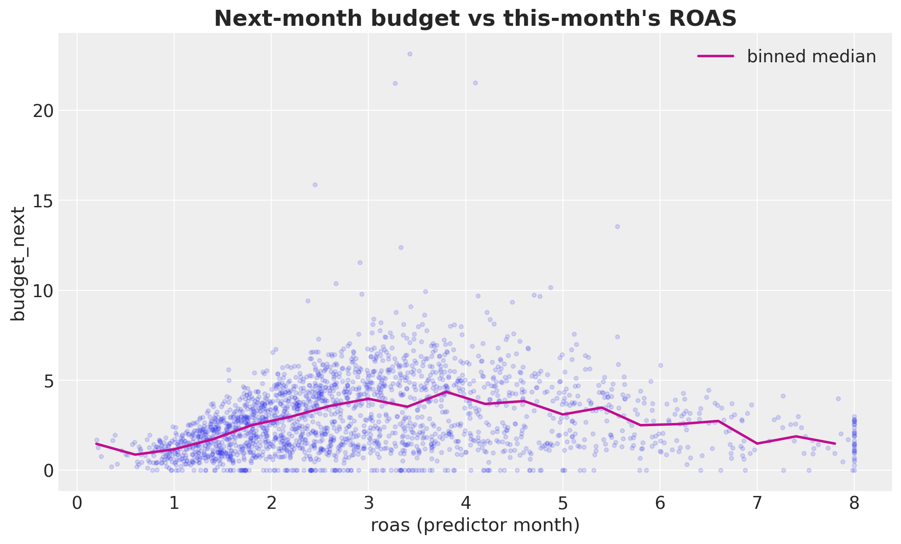
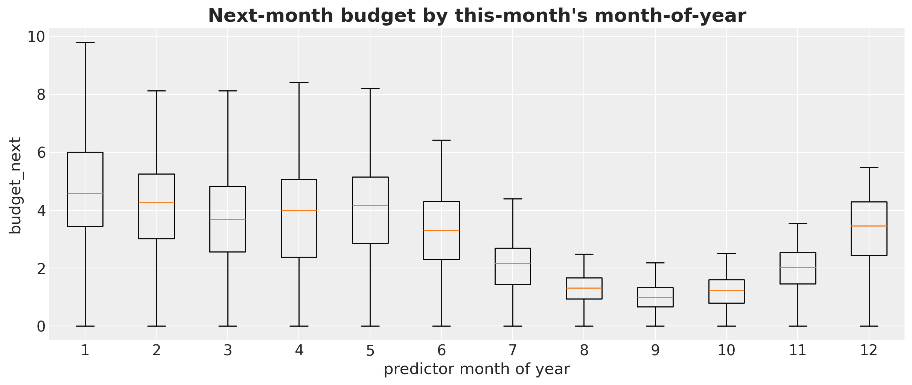
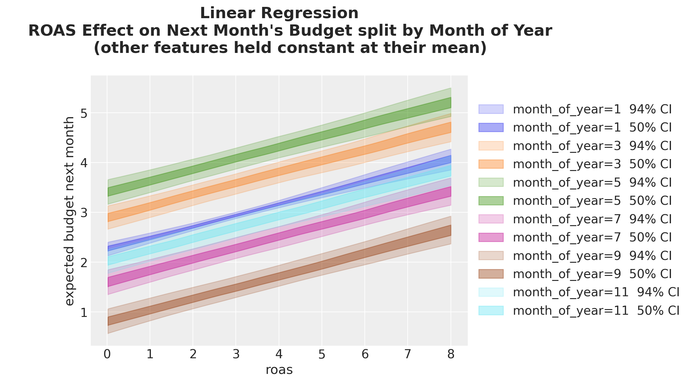
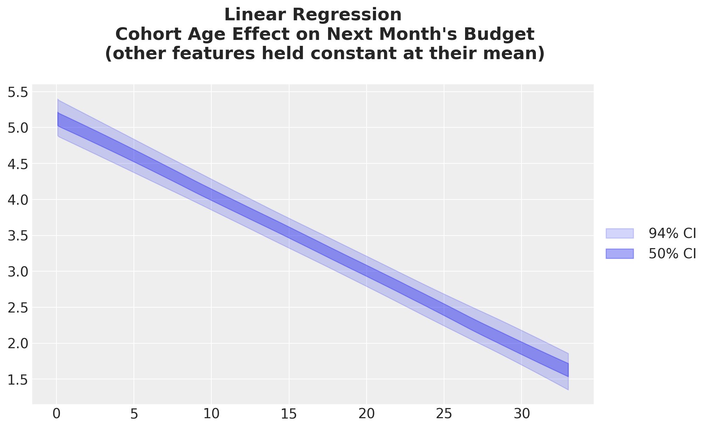
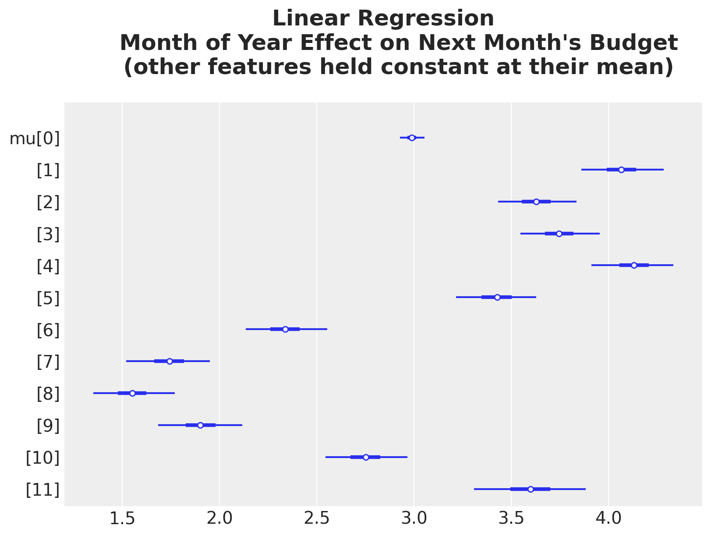
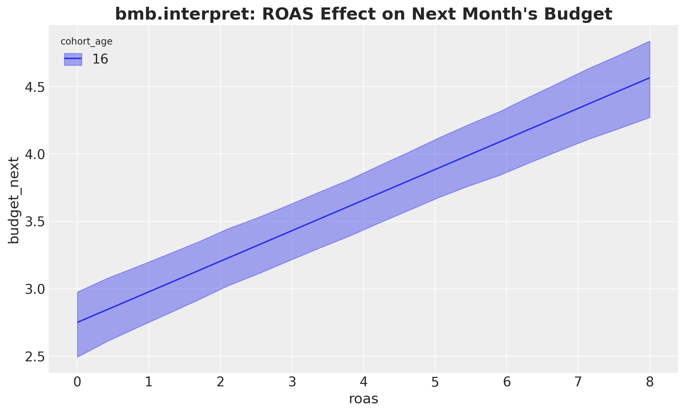
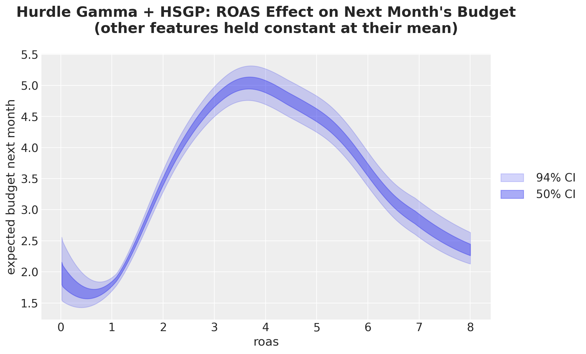

A model is only useful if a decision-maker can act on it.
The hard part is rarely fitting; it is turning parameters into a statement someone trusts.
Reporting coefficients is not enough. A single number like “\(\beta_{\text{roas}} = 0.23\)” hides the link function, the scale, and any non-linearity. Off the identity link, the coefficient is not the effect.
Visualization carries the meaning. Showing the predicted response over a grid of inputs answers the question stakeholders actually ask: what happens to the outcome if this input moves?
Uncertainty is part of the answer. Every prediction and every contrast comes with a posterior. Communicating the credible interval is as important as the point estimate.
An ad platform sells digital realestates to stores to induce incremental sales. This platform charges stores per click and reports back ROAS (return on ad spend). Stores keep spending while campaigns are worth it; when they are not, they pause.
Goal: understand the relationship between next month’s booked budget and this month’s signals: ROAS, where the store is in its life-cycle (cohort age), and the time of year.
ROAS \(> 1\) is profitable, ROAS \(< 1\) is not. So should the bidding engine just push ROAS as high as possible?
It seems so, but no. Stores have a fixed daily production capacity. Very high ROAS often precedes a drop in next month’s budget: they hit an inventory ceiling.
We therefore expect a non-linear relationship between ROAS and next month’s budget.
This is an oversimplified example: we ignore cannibalization, other drivers, and a richer causal structure. In practice this problem is much harder.
Causal DAG
The Panel Data
100 stores, observed for 24 months each.
Each row pairs this month’s signals with next month’s budget (the leading indicators a store could act on).
Budgets are non-negative and have many zeros (inactive months).

Next-month booked budget for twelve random stores.
What Is Already Visible in the Data?
Exploratory data analysis hints at non-linear relationships.

Next-month booked budget vs ROAS.
The non-linear shape is visible to the eye: budget rises with ROAS, then levels off past \(\text{ROAS} \approx 4\).

Yearly seasonality by month-of-year.
Baseline: Linear Gaussian
The simplest thing that could work: plain linear regression, Gaussian noise, identity link.
It puts mass on negative budgets, which are impossible.
It misses the spike of zeros from inactive stores.
The Coefficient Trap
Read straight off the coefficient: an extra unit of ROAS is associated with \(+0.23\) in next month’s budget, holding the rest constant.
By design this holds at every ROAS level: a single slope, no peak, no saturation. That directly contradicts what we just saw in the data.
The Interpretation Recipe
Instead of reading coefficients, study the posterior of \(\mathbb{E}[Y \mid \text{grid}]\) over a grid of inputs. This is where the thinking happens: which question do we want to answer?
# 1. Build a reference grid: vary ROAS, hold the rest at their mean.roas_datagrid = datagrid( roas=roas_grid, cohort_age=cohort_age_default, month_of_year=month_of_year_default, newdata=model_df,)# 2. Push the grid through the posterior to get the response mean mu.def predict_mu(model, idata, grid_pl): new_idata = model.predict(idata, data=grid_pl, kind="response_params", inplace=False)return new_idata["posterior"]["mu"]# 3. Summarize on the response scale (here: 94% HDI bands).idata_lm_mu_grid = predict_mu(model_lm, idata_lm, roas_datagrid)az.plot_hdi(roas_grid, idata_lm_mu_grid, hdi_prob=0.94)...
ROAS Effect on Next Month’s Budget
The slope of this posterior line is exactly \(0.23\): the same value as the regression coefficient.
For a linear identity-link model the grid view equals the coefficient. The point is that the same recipe generalizes to models where no single coefficient exists.
Split by Cohort Age
Adding a second variable to the grid splits the effect into one line per cohort age.
The slope (ROAS effect) is identical across cohorts; only the intercept shifts down as cohorts get older. That is the linear model’s rigid signature.
Split by Month of Year
Same story across months: the ROAS slope is shared, the intercept moves.

The variation is non-linear in the month index because of the ZeroSumNormal seasonal contrast, but ROAS itself still enters as one constant slope.
Comparison: Month 3 vs Month 9
Beyond predictions, we can difference two grids: the gap between month 3 and month 9.
The three marginaleffects primitives:
predictions: what does the model say here?
comparisons: what changes from A to B?
slopes: what is \(\partial \hat{Y} / \partial X\) here?
The difference is constant in ROAS: a direct consequence of linearity.
Cohort Age and Month-of-Year Effects

A linear decay in budget as cohorts age.

Month effects via a forest plot, centered on zero by the ZeroSumNormal contrast.
The Same Answers via Bambi’s interpret
Everything so far we built by hand. Bambi packages the identical recipe behind three one-liners: plot_predictions, plot_comparisons, plot_slopes.
The first conditional key is the x-axis, a second key becomes the color grouping, a third becomes the panel. Omitted covariates are held at mean or mode.

Same posterior, same grid, same \(\mu\): a single \(94\%\) band instead of our hand-layered bands.
What Is a Hurdle Model?
To fix the likelihood we need a response that is non-negative and can produce many zeros.
Two parts: a point mass at zero (probability the store is inactive next month) plus a Gamma density on the positive budgets. \(\psi\) is the activity gate, \(\mu_i\) the Gamma-conditional mean.
Log link:\(\mu_i = \exp(\text{linear predictor})\), so the response stays positive and the coefficient becomes a multiplicative effect, \(\exp(\beta_{\text{roas}})\) per unit of ROAS.
A coefficient is now even harder to communicate: the same \(+1\) in ROAS means a different absolute change at every level.
Hurdle-Gamma: Posterior Predictive
The likelihood is now right: non-negative response and an explicit zero point-mass.
The fit is much closer to the data than the Gaussian baseline. However, there is still a room for improvement.
Hurdle-Gamma: ROAS Effect
The recipe is unchanged: we just swap the model in predict_mu. No need to interpret \(\exp(\beta)\) at all.
The log link bends the line into a monotone curve: stronger growth at higher ROAS.
Split by cohort age: curves now fan out on the response scale (parallel on the log scale).
Better likelihood, but still the wrong shape: monotone growth, no peak, no saturation.
Hurdle-Gamma + HSGP on ROAS
We keep the Hurdle-Gamma likelihood and replace the linear roas term with a Hilbert-space Gaussian process. The GP lets the data shape the curve: no linearity, no polynomial, no knots.
The best posterior predictive of the three models: it captures the zeros, the non-negativity, and the bulk of the budget distribution.
Hurdle-Gamma + HSGP: ROAS Effect

The curve rises then saturates past \(\text{ROAS} \approx 4\), exactly the mechanism we built into the problem.
Split by cohort age: same shape, smaller amplitude for older cohorts.
There is no single ROAS coefficient to report here. The grid-based prediction is the answer, and it reads cleanly off the plot.
Slopes: Marginal Effect of ROAS
Derivative of the ROAS effect with respect to ROAS.
From a ROAS values close to zero, the ROAS effect is negative.
ROAS values close to \(1.5\) have the largest sensitivity to ROAS changes (steeper slope).
We get a maximum ROAS effect of about \(3.5\) and then the effect decreases (negative slope).
Model Comparison: LOO
Leave-one-out cross-validation ranks out-of-sample fit (higher elpd_loo is better).
Hurdle-Gamma + HSGP is best.
Linear Hurdle-Gamma second.
Linear Gaussian worst.
Recovered ROAS Curves vs True Curve
The Hurdle-Gamma + HSGP model tracks the true non-linearity, peak and saturation included. The linear models cannot.
Conclusion
Model Iteration:
Linear Gaussian: a single ROAS coefficient, but the wrong likelihood (negative budgets, missed zeros) and the wrong shape (a line, not a peak).
Hurdle-Gamma (linear ROAS): fixes the likelihood (non-negative, explicit zeros, multiplicative log link); shape still monotone.
Hurdle-Gamma + HSGP: right likelihood and a data-driven curve that recovers the truth and wins on LOO.
Across all three models the interpretation recipe is identical: build a grid with datagrid, push it through the posterior with predict_mu, summarize on the response scale, with uncertainty.
Raw coefficients answer the wrong question once you leave identity-link land.
Grid-based predictions, comparisons, and slopes answer the right one.